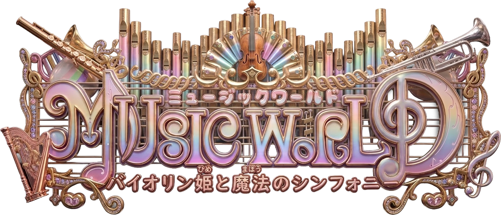

異なる音色が奏でる、世界を救うシンフォニー——
弦・管・打・鍵、四つの国の音楽が一つになるとき奇跡が生まれる。
A Symphony That Saves the World
弦・管・打・鍵——四つの国それぞれの音楽が持つ固有の魔法の力。バイオリン姫が奏でる繊細な旋律は、人々の心を動かし世界を変える力を秘めている。
ゲンガク・カンガク・ダガク・ケンバンガク——それぞれが独自の文化と音楽の魔法を持ち、対立と友情の狭間で揺れる四国の物語。
かつての敵と手を組み、仲間と絆を深め、師に学ぶ——すべての旅が一つのシンフォニーへと収束するクライマックスは、見た者の心を永遠に揺さぶる。
家族を奪われた姫の脱出から、師との修行、仲間との絆、そして世界を救うグランドシンフォニーまで——24章にわたる深く感動的な物語。